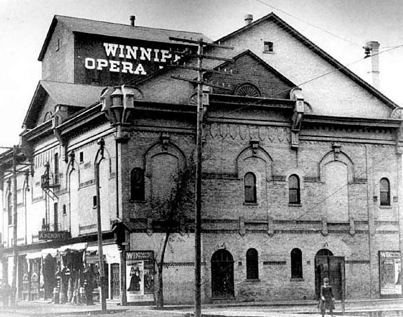
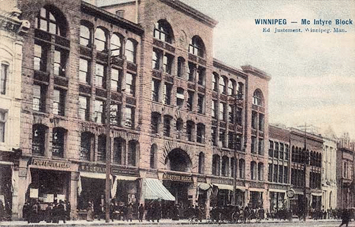

-1-MasterItem.svg)
Stories of Westminster United Church & its People / Page
34
from California on May 4th, and were met at the depot
by a large concourse of friends, and received a warm
welcome.” (Quoted from a book of Westminster history.)
The
Manitoba Daily Free Press
also announced their arrival,
editorializing: “More than his immediate congregation will
welcome Rev. Mr Pitblado’s return to Winnipeg. His going
away was a distinct loss to the city, as he was among the
ablest and most earnest of its Christian workers. The
members of the new Westminster are to be congratulated
on their great good fortune in being able to induce him to
come back.” Pitblado commenced his “ministrations”
at two services in Victoria Hall “in v front of congregations
considerably larger than those of St. Andrews Church
when he started his pastorate there in 1881.”
The choice of venue is somewhat comically ill-suited:
Victoria Hall, built in 1883 and located at 34 Adelaide Street,
was until recently a place for bawdy vaudeville and light
entertainment such as women boxers and trapeze acts
(it originally bore the euphemistic name Winnipeg Opera
House). His induction into his pastorate took place the
following day and was attended by “several hundred people
who had climbed three flights of stairs leading to Friendship
Hall in The McIntyre Block at 416 Main Street.” (Pictured
as it would have looked in Pitblado’s time.) Two and a half weeks later, the Young People’s Society
of Christian Endeavour was formed with Pitblado’s son Isaak as President and John Logan
as Secretary-Treasurer with a membership of 13. Isaak was then 23 years old.
Let’s back up and take another look at Westminster’s beginnings.


Rev. Charles Bruce Pitblado